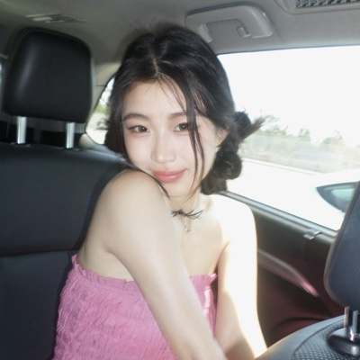

i love building startups, cooking up fun projects, skydiving, and experiencing the world.
Goal before i die: build things that change the world for the better.
我喜欢做公司、做好玩的小东西、跳伞,还有到处去看看这个世界。
死之前想干成的事:做出能让世界变好一点的东西。
it's already live! open it on your computer, allow your camera, and pinch your thumb and fingertips together to make the words speak.
press E to swap in your own words.
takes ~5 seconds
已经上线了!用电脑打开,允许摄像头,拇指和指尖捏一下,字就会说话。
按 E 换成你自己的词。
大概 5 秒
copy my prompt into Claude or ChatGPT and ask it to build you a single HTML file.
you might need to tweak a few things depending on your setup. i documented the bugs i ran into here, so you can skip some of the trial and error.
have fun making yours :)
takes ~15 minutes
把我的 prompt 丢给 Claude 或 ChatGPT,让它给你做一个 HTML 文件。
看你的电脑,可能要调几个地方。我踩过的坑都记在这里,你可以少走点弯路。
做得开心 :)
大概 15 分钟
a lot of you have been asking what i use to film, so here's my little camera setup!
why i love it:
好多人问我是用什么拍的,这就是我的小相机。
我喜欢它的几点: